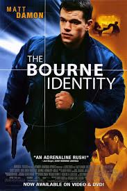
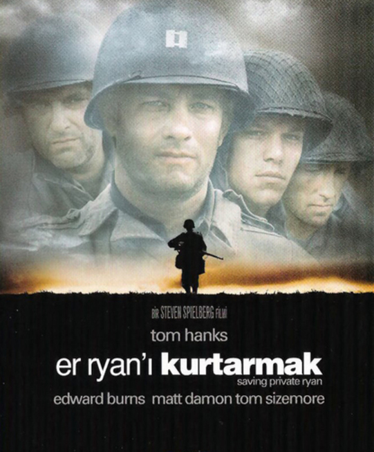

Matt Damon'un Kişisel Web Sitesi
Anasayfa
Hakkında
Filmleri
İletişim
Geçmişi Olmayan Adam

Yaralı ve hafızasını kaybetmiş olan Jason Bourne hayatını yeniden kurmaya başlar. Ancak karşılaştığı pek çok insan, onun ölmesini istemektedir.
Başroldekiler:Matt Damon,Franka Potente,Chris Cooper
Er Ryan'ı Kurtarmak

Er Ryan’ı Kurtarmak'ta, dört çocuk annesi bir kadı İkinci Dünya Savaşı’nda kaybettiği üç oğlunun ardından fazlasıyla yaralanmıştır. Şimdi tek dileği hayatta kalan tek oğlunun savaştan sağ salim dönmesidir. Yakarışları karşılık bulur ve Başkan tarafından verilen bir emirle James Ryan’ın ne pahasına olursa olsun bu savaştan sağ çıkması sağlanacaktır. Normandiya çıkarmasının yapıldığı gün, sekiz kişilik bir asker birliği farklı bir göreve, Ryan’ı kurtarma görevine atanır. Ancak yüzbaşı John Miller tarafından yönetilen bu birim, can pazarının yaşandığı bu zorlu ortamda hakikatli bir yaşam mücadelesine atılacak; tek bir adamı kurtarmak için sekiz kişinin hayatının tehlikeye atılmasının meşruluğunu sorgulayacaktır.